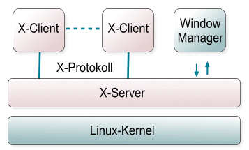
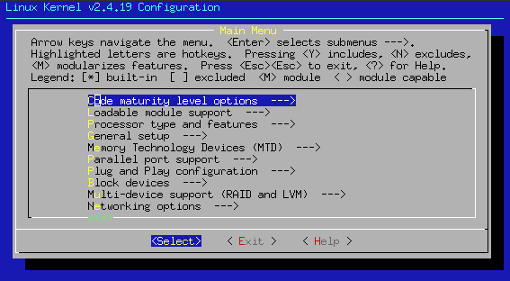

Überblick über Linux¶
Was ist Unix?¶
Beschreibung
Zwei Definitionsversuche:
“Strictly, UNIX is a trademark administered by X/Open and refers to a computing operating system that conforms to the X/Open specification XPG4.2. This specification, also known as SPEC1170, defines the names of, interfaces to and behaviors of all UNIX operating system functions.”
(aus Beginning Linux Programming, Wrox Press 1996).
“UNIX ist das Betriebssystem der Zukunft und das schon seit über 30 Jahren!” - so ein ironischer Spruch eines nicht-UNIXers.
Die Geburt von UNIX¶
Spaß beiseite. en UNIX ist die Oberbezeichnung für eine Familie von Betriebssystemen, die alle sehr ähnlich aufgebaut sind und zum großen Teil sogar vom gleichen “Urahn” abstammen.
UNIX-Systeme laufen heutzutage auf jedem Rechner, vom de Embedded System bis zum de Mainframe, was insbesondere auch ein Verdienst von Linux ist.
Die Geschichte von UNIX liest sich stellenweise wie ein Heldenepos oder ein Kriminalroman, manchmal auch wie eine Groteske. Schon die Geburt von UNIX vollzog sich unter eigenartigen Umständen, denn es entsprang einem gescheiterten Projekt: Anfang 1969 gab es ein Gemeinschaftsprojekt des en MIT, General Electric und den en Bell Labs von de AT&T, das Ideen für eine neue Generation von Betriebssystemen gesammelt hatte und daranging, diese Ideen unter dem Namen en Multics umzusetzen. Da weder Zeitplan noch Budget eingehalten werden konnten, zog sich Bell Labs sehr schnell aus dem Projekt zurück. de Ken Thompson und de Dennis Ritchie, zwei Mitarbeiter von Bell Labs, die an Multics mitgearbeitet hatten, waren von den Einfällen und Erfahrungen, die sie mit Multics gesammelt hatten, so beeindruckt, dass sie kurzerhand eine abgespeckte Version des ursprünglichen Multics selbst schrieben und unter dem Namen Unics, später UNIX, in die Welt setzten.
Eine der Hauptmotivationen für UNIX war jedoch ein Spiel, das Thompson in seiner Freizeit geschrieben hatte. Um sein Spiel en Space Travel auf eine PDP-7 zu portieren, benötigte Thompson u. a. ein Dateisystem, um das Spiel dauerhaft auf die PDP-7 zu speichern. (Zur Cross-Compilierung wurden noch Lochstreifen benutzt, die vom GECOS-System zur PDP getragen wurden.)
Übrigens: Unics bzw. UNIX enthält ein zweifaches Wortspiel: Zum einen die Vorsilbe Uni- als Gegenstück zu Multi-, zum anderen wird UNIX genauso gesprochen wie “Eunuchs” - typischer Programmiererhumor dieser Zeit.
UNIX gewann sehr schnell eine große Verbreitung innerhalb der Bell Labs. AT&T war es aufgrund einer kartellgerichtlichen Entscheidung verwehrt, beliebig im kommerziellen Feld tätig zu werden, so auch im Falle von UNIX. Stattdessen lizenzierte AT&T UNIX gegen nominelle Gebühren an Universitäten, an denen UNIX seinen ersten Siegeszug antrat.
Eine besondere Rolle kam dabei der University of California in Berkeley zu, die einen eigenen Zweig des UNIX-Systems hervorgebracht hat, die Berkeley Software Distribution, kurz BSD. Sie war eng mit dem Quellcode von AT&T verwoben, zur Verwendung benötigte man also ebenfalls eine Lizenz von AT&T.
Auch das Interesse kommerzieller Anbieter an UNIX war geweckt worden: Sie erwarben Quellcode-Lizenzen von AT&T und brachten eigene, meistens auf besondere Hardware abgestimmte UNIX-Varianten heraus.
Eigenschaften von UNIX¶
Was ist nun das Besondere, das UNIX auszeichnet? UNIX hatte Eigenschaften, die heute zwar selbstverständlich geworden sind, aber damals noch recht neu waren:
- ein hierarchisches Dateisystem, d. h. die Möglichkeit, Dateien in Ordnern zu strukturieren - die ersten DOS-Versionen ab 1980 beherrschten dies noch nicht.
- Multitasking, d. h. mehrere Programme (oder Prozesse) können gleichzeitig laufen, ohne sich zu stören. Von Anfang an war dieses Multitasking preemptiv, d. h. die Steuerung und Zuteilung des Prozessors wird direkt vom Betriebssystemkern übernommen, ohne dass einzelne Programme fehlerhaft oder böswillig das ganze System in den Abgrund ziehen können - bei Windows und Mac war man erst in der zweiten Hälfte der 90er Jahre auf dem Weg dorthin. Multiuser-System, d. h. mehrere Benutzer können am gleichen System arbeiten und ihre Daten und Ressourcen beliebig für den Zugriff durch andere Benutzer sperren oder freigeben. Es können auch mehrere Benutzer am System gleichzeitig arbeiten, wenn die Hardware es zulässt (z. B. zusätzliche Konsolen oder Arbeiten über Netzwerkverbindung).
Netzwerkfähigkeit, schon sehr früh wurden die UNIX-Kernel mit einem TCP/IP-Stack ausgestattet und bildeten so sehr schnell das Rückgrat des damals noch jungen Internets.
Darüber hinaus haben UNIX-Systeme charakteristische Eigenschaften:
UNIX war unabhängig von irgendeiner bestimmten Hardwareplattform. Die meisten Betriebssysteme damals (und auch noch heute) waren auf einen bestimmten Prozessortyp zugeschnitten, und diese Abhängigkeit setzte sich fort in den Programmen, die für diese Systeme geschrieben wurden. UNIX abstrahiert so weit von der Hardware, dass es möglich wird, das System auf andere Plattformen zu portieren und dann UNIX-Programme ohne große Änderungen dort laufen zu lassen. Zwar gab es schon damals standardisierte Programmiersprachen, die auf mehreren Plattformen verfügbar waren, aber immer in leicht abgewandelter Form, so dass es praktisch unmöglich war, einfach portierbare Programme zu schreiben. Ein Grund für die Portabilität lag darin, dass UNIX nicht in Assembler sondern in C programmiert war (eine Hochsprache, die 1972 von Thompson und Ritchie entwickelt wurde). Zunächst war der UNIX-Code jedoch, obwohl er zum großen Teil in C geschrieben war, sehr stark an die Architektur der PDP gebunden. Erst mit UNIX Release 7 (1979) wurde der Code wirklich portabel. UNIX kommt von Hause aus mit einer Fülle an Entwicklungswerkzeugen und Bibliotheken: man muss nicht erst lange viel Software nachinstallieren, sondern findet das Wichtigste schon vor und kann davon ausgehen, dass auf jedem entsprechenden UNIX-System das gleiche vorhanden sein wird. Ein legendäres Programm, das schnell zum Grundbestandteil eines UNIXes wurde, war z. B. die Shell sh, die Steve Bourne schrieb. Der Linuxgemeinde ist sein Name in der allseits bekannten bash (Bourne Again Shell) überliefert. Zahlreiche Aufgaben lassen sich unter UNIX sehr einfach automatisieren. UNIX verfügt über elegante Programmierkonzepte, die dem ästhetischen Empfinden vieler Programmierer entgegenkommen.
Zur Schreibweise: Sowohl “UNIX” als auch “Unix” sind gültige Schreibweisen. UNIX (in dieser Schreibweise) ist darüber hinaus ein eingetragenes Warenzeichen der Open Group, was bei der Auswahl der Schreibweise ggf. eine Rolle spielen kann. Innerhalb von SelfLinux hat eine mögliche unterschiedliche Verwendung durch die Autoren keine Bedeutung.
Die Zersplitterung von UNIX und Standardisierungsbestrebungen¶
1984 trennte sich de AT&T von etlichen Tochterfirmen, womit ihr auch gestattet wurde, sich als gewöhnlicher Wettbewerber auf dem Computermarkt zu betätigen. Damit wurden auch die Lizenzgebühren für UNIX drastisch angehoben und der Zugang zum Quellcode mehr und mehr eingeschränkt. Die Folge war, dass die Kooperation zwischen den Firmen, die UNIX kommerziell vermarkteten, immer mehr zurückging und jeder in “seiner” UNIX-Version seine eigenen Erweiterungen und Verbesserungen einbaute, bis UNIX heillos in unterschiedliche Versionen aufgesplittert war: SunOS von SUN, HP-UX von Hewlett-Packard, AIX von IBM, Ultrix von Digital, SINIX von Siemens, auch Microsoft versuchte sich auf dem UNIX-Markt mit Xenix. Ein großer Vorteil, die leichte Portierbarkeit der UNIX-Programme, drohte mit dieser Zersplitterung zu verschwinden und viele Stimmen prophezeiten auch ein mittelfristiges Ende von UNIX.
Als AT&T nach der Zerschlagung als Wettbewerber auftreten durfte, versuchte es auch, einen Standard zu schaffen: en System V (wobei das V für die Zahl 5 steht und nicht für den Buchstaben, also “System Five” gesprochen).
1985 brachte AT&T das “System V Interface Definition” oder auch “lila Buch” heraus. Dieses Dokument stellte ein Standard für die UNIX-Schnittstellen dar. Zusätzlich enthielt es auch eine Menge Werkzeuge, die ein System auf die Konformität mit dem Standard V überprüfte. Diese von AT&T 1983 freigegebene Version “UNIX System V” war zu dieser Zeit die domierende Version, dies stellte den Versuch dar, die Hersteller auf einen Standard zu einen. Wegen des Widerstandes, der unter anderem dadurch entstand, dass man sich nicht von einer einzigen Firma abhängig machen wollte, entstanden im Laufe der Zeit andere Standards, so z. B. en POSIX (Portable Operating System based on UNIX). Weil AT&T alle Rechte an dem Namen UNIX hatte, wurde vom en IEEE (Institute of Electrical and Electronic Engineers) dieser Name für diesen Standard gewählt. Ein anderes Beispiel hierfür ist X/Open: Das X/Open Konsortium ist ein Zusammenschluss verschiedener Computerhersteller, die einen De-Facto-Standard schaffen wollten. 1988 wurde der X/Open Portability Guide veröffentlicht.
UNIX, GNU & Linux¶
All diesen Standardisierungsversuchen blieb der Durchbruch verwehrt. Erfolg hatte dagegen ein Projekt, gestartet Anfang der 80er-Jahre am MIT von de Richard Matthew Stallman, dem “letzten Hacker der Altvorderenzeit”, das en GNU-Projekt: GNU’s Not UNIX. Sein Ziel war es, von Grund auf ein neues, UNIX-ähnliches Betriebssystem zu schreiben, das frei verfügbar sein sollte. Durch seinen intensiven Einsatz und Beiträge anderer Programmierer entstand bis Ende der 90er eine beachtliche und leistungsstarke en Sammlung an UNIX-Werkzeugen. Auch wenn das System bislang nicht vollständig ist, konnten sich die GNU-Werkzeuge dennoch auf vielen UNIX-Varianten etablieren, unter anderem auch deshalb, da einzelne UNIX-Anbieter ihre Einnahmequellen noch etwas auszubauen gedachten. Mit dem Grundpaket wurde z. B. kein C-Compiler mitgeliefert, worauf viele Systembetreuer, um Geld zu sparen, auf Stallmans en GNU C-Compiler zurückgriffen, der ohnehin qualitativ besser war. So wurden die GNU-Werkzeuge ein systemübergreifender Quasi-Standard. Die freie Entwicklungsmethode hatte erreicht, woran die proprietären Standardisierungsversuche bislang gescheitert waren.
Bemerkenswert: Als Stallman den Entschluss fasste, GNU zu starten, hatte er noch nie mit UNIX gearbeitet, geschweige denn eine Zeile C-Code programmiert. Alles, was er wusste, waren ein paar grundlegende Konzepte und die Tatsache, dass UNIX seine Plattformunabhängigkeit bereits unter Beweis gestellt hatte.
Auch von akademischer Seite wurde der immer zugeknöpfteren Haltung der UNIX-Vertreiber begegnet: Zu Anfang wurde der Quellcode von AT&T den Universitäten offen zur Verfügung gestellt und so vielerorts als Tutorial für die Arbeitsweise eines Betriebssystems verwendet. Als AT&T den Quellcode unter Verschluss brachte, fiel diese Möglichkeit weg. de Andrew S. Tanenbaum, Informatik-Professor an der Freien Universität Amsterdam, entschloss sich daher, für seine Studenten eine eigene Version von UNIX zu schreiben, die nichts mit dem urheberrechtlich geschützten Code von AT&T zu tun hatte. Nach zwei Jahren harter Arbeit brachte er sein System unter dem Namen en Minix heraus. Es war weniger für die praktische Arbeit, sondern in erster Linie als Lehrobjekt gedacht. Dennoch wurde es von sehr vielen Studenten auch praktisch auf dem heimischen PC eingesetzt, da es im Gegensatz zu den kommerziellen UNIX-Varianten für einen moderaten Preis zu haben war. Allerdings stieß Minix in diesem Einsatzgebiet sehr schnell an seine Grenzen. Viele seiner Anwender machten Tanenbaum Vorschläge und schickten Patches für Erweiterungen und Verbesserungen. Tanenbaum allerdings war damit sehr zurückhaltend. Da er Minix in erster Linie als Tutorial sah, kam es ihm mehr auf eine knappe und klare Struktur als auf eine möglichst umfassende Funktionalität an.
Ein Minix-Anwender mit Namen Linus Torvalds gab sich damit nicht zufrieden. Das GNU-System war bis auf den Kernel vollständig, aber das Release des GNU-Kernels mit Namen HURD schien noch auf sich warten zu lassen. Um die zeitliche Lücke bis dahin zu füllen, begann er selbst einen Kernel zu schreiben, der sehr rasch unter dem Namen Linux Verbreitung fand und eine große Entwickler- und Benutzergemeinde zusammenbrachte. Da die meisten Entwickler auf UNIX-Varianten arbeiteten, auf denen die GNU-Werkzeuge liefen, lag es nahe, den Linux-Kernel so einzurichten, dass er zusammen mit den GNU-Werkzeugen verwendet werden konnte: en GNU/Linux. Der Kernel en HURD ist über “akademische” Anfänge bislang nicht hinausgekommen, so dass das anfänglich als “Provisorium” gedachte Linux sich an seiner Stelle etabliert hat.
Zur gleichen Zeit löste sich BSD aus seiner ursprünglichen Abhängigkeit von AT&T: Eine Gruppe von BSD-Entwicklern ersetzte alle Anweisungen im Quellcode, die noch von AT&T beigesteuert waren, durch neue und erstritt in einem langwierigen Gerichtsverfahren für BSD die Freiheit. Daraus gingen die Projekte en FreeBSD, en NetBSD und en OpenBSD hervor, die auch eine beachtliche Verbreitung gefunden haben und manchmal als Linux-Vettern bezeichnet werden (und so manche Linux-Distribution enthält das ein oder andere “Schmankerl” aus einem der drei Projekte).
Seither hat sich Linux zu einem bedeutenden UNIX entwickelt: Kommerzielle UNIX-Anbieter haben Marktanteile an Linux verloren und mussten neue Strategien entwickeln. Nicht selten mündeten diese Überlegungen in offener Unterstützung für Linux, dessen weitere Verbreitung ohnehin nicht mehr zu verhindern war.
UNIX (insbesondere seine freien Versionen) ist heute auf dem Servermarkt eine feste Größe. Ob ihm auch auf dem en Desktop ein Durchbruch beschieden sein wird, ist eine der spannendsten Fragen der Gegenwart.
Autor
Florian Fredegar Haftmann florian.haftmann@stud.tu-muenchen.de
Formatierung
Alexander Fischer Selflinux@tbanus.org
Was ist eine Shell?¶
Einleitung¶
Das vorliegende Kapitel gibt bewusst keine Einführung in technische Details. Es ist insbesondere an Benutzer gerichtet, die noch keine große Erfahrung im Umgang mit Shells haben und die wissen möchten, warum Shells überhaupt verwendet werden und welchen Nutzen sie haben. Wer nach technischen Einzelheiten zum Umgang mit Shells sucht, sei auf die beiden Kapitel Einführung in die Bourne Again Shell und Shellprogrammierung verwiesen.
In diesem Kapitel werden insbesondere die folgenden Fragen beantwortet:
Welche Rolle spielt eine Shell innerhalb des Gesamtsystems? Wodurch erleichtert eine Shell die tägliche Arbeit? Wie trägt die Shell zur Einrichtung einer persönlichen Umgebung bei? Gibt es nur eine oder gibt es unterschiedliche Shells?
Ein Mittler zwischen Benutzer und Betriebssystem-Kern¶
Weil die direkte Kommunikation mit dem Betriebssystem-Kern für einen Benutzer viel zu komplex wäre, ist eine vereinfachte Benutzer-Schnittstelle erforderlich. Neben einer grafischen Schnittstelle wie dem X Window System wird diese Leistung vor allem von einer Shell bereitgestellt. Der englische Ausdruck Shell, zu Deutsch etwa Schale oder Ummantelung, drückt diesen Sachverhalt bereits aus. Die Übersetzung oder Symbolisierung als Muschel hat dabei wohl mehr mit Spieltrieb und Anschaulichkeit als mit einem echten technischen Hintergrund zu tun. Jedenfalls lässt sich eine Shell als eine Schicht zwischen Betriebssystem und Benutzer verstehen. Wir veranschaulichen dies in der folgenden Grafik:

Funktionsweise einer Shell; Grafik Rolf Brunsendorf
Während Benutzer, die noch nicht häufig mit Shells in Berührung gekommen sind, den wartenden Eingabeprompt einer Shell als trist und abweisend, ja sogar als Hindernis empfinden mögen, wurden Shells doch mit der gegenteiligen Absicht entwickelt: Sie sollten die tägliche Arbeit vereinfachen und erleichtern.
Die Interpretation der Kommandozeile¶
Die Hauptaufgabe einer Shell besteht darin, Kommandos entgegenzunehmen und das Betriebssystem um ihre Ausführung zu bitten. Das klingt einfach, stößt aber in der Praxis auf besondere Probleme und Anforderungen. Eine Shell hat daher zunächst eine Interpretation der Kommandozeile zu leisten. Sie interpretiert einzelne Zeichen oder Worte der Eingabe und ersetzt sie ggf. durch neue Zeichen oder Worte. So stehen beispielsweise Variablen für bestimmte Zeichenketten und werden zunächst von der Shell durch ihren Inhalt ersetzt, bevor der Aufruf eines Kommando erfolgt. Das gleiche gilt für Platzhalterzeichen wie * oder ?, die für die Angabe von Zeichenmustern verwendet werden können. Diese und zahlreiche weitere Mechanismen kann der Benutzer verwenden, um seine Kommandozeilen knapper und effektiver zu formulieren.
Die Kombination von Kommandos¶
Häufig ist es auch nicht nur ein einzelnes Kommando, das ausgeführt werden soll. Kommandos können beispielsweise so miteinander verbunden werden, dass die Ausgabe eines Kommandos zur Eingabe eines weiteren Kommandos wird. Auch wiederholte oder bedingte Ausführungen in Form von Schleifen und wenn - dann-Konstrukten sind wünschenswert und werden daher von vielen Shells ermöglicht. Und schließlich möchte man häufig eine bestimmte wiederkehrende Folge von Kommandos ausführen lassen, die man daher in einer Datei niederschreibt und für die spätere Ausführung abspeichert. Die Konfiguration eines Linux-Systems erfolgt häufig über solche Dateien, die als Shell-Skripte bezeichnet werden.
Bereitstellung einer persönlichen Arbeitsumgebung¶
Bei der täglichen Arbeit ist des weiteren die Konfiguration einer typischen Arbeitsumgebung von Bedeutung. So möchte ein Benutzer beispielsweise meist mit einer passenden Spracheinstellung arbeiten, seinen Lieblingseditor zum Editieren von Texten verwenden, verwendeten Programmen Information über seine Vorlieben mitteilen, die Form seines Eingabepromptes ändern und vieles andere. All dies lässt sich über sogenannte Shellvariablen konfigurieren, auf Wunsch auch dauerhaft in einer Konfigurationsdatei, damit die Einstellungen nicht bei jeder Anmeldung wiederholt werden müssen. Eine Shell bietet ihrem Benutzer somit eine konfigurierbare, persönliche Umgebung, um typische Arbeitsabläufe möglichst komfortabel und fehlerfrei abwickeln zu können.
Unterschiedliche Shells¶
Im Laufe der Zeit wurden unterschiedliche Shells entwickelt. Je nach Erfahrungshintergrund bevorzugen Anwender einzelne Shells, die es ihnen besonders gut ermöglichen, ihre jeweiligen Ziele zu erreichen. Die oben beschriebenen Anforderungen werden zwar von jeder Shell erfüllt, gelegentlich können jedoch besondere Anforderungen wie beispielsweise besonders komfortable Programmierbarkeit, Unterstützung spezieller Programmier-Konstrukte oder Kompatibilitätserwägungen eine Rolle bei der Auswahl der Shell spielen.
Die Mutter aller Shells stellt gewissermaßen die Bourne Shell dar. Unter Unix darf man sicher sein, zumindest eine mit der Bourne Shell kompatible Shell anzutreffen, und die meisten Skripte sind auch heute noch in der Bourne Shell-Syntax gehalten. In der Linux-Welt ist zweifellos die Bourne Again Shell (bash) am weitesten verbreitet, die zur Bourne Shell aufwärtskompatibel ist und darüber hinaus zahlreiche Erweiterungen erfahren hat. Aber auch andere Shells wie etwa die C-Shell (csh) und ihre Nachfolger sowie ash oder zsh sind in der Praxis immer wieder anzutreffen. Wenn keine besonderen Anforderungen eine Rolle spielen, ist die bash für den Einstieg eine gute Wahl.
Zusammenfassung¶
Wir haben in diesem Kapitel keine technischen Details besprochen, sondern uns der Frage gewidmet, warum Shells überhaupt verwendet werden und welche Leistung sie für die Arbeit mit einem Computer erbringen. Der Urgrund für die Entwicklung von Shells war die Bereitstellung einer Kommunikations-Schicht zwischen Betriebssystem und Benutzer, damit dieser nicht die komplexen Eigenheiten des Betriebssystemes selbst kennenlernen musste. In der täglichen Arbeit ergab sich dann der Wunsch nach zusätzlichen Mechanismen, welche dem Benutzer halfen, typische Arbeitsschritte effizienter zu bewältigen. Die Entwicklung unterschiedlicher Shells ist in diesem Sinne nur ein Ausdruck unterschiedlicher Anforderungen an den Komfort und die Leistungsfähigkeit der Shell. Man sollte die verschiedenen Mechanismen ebenso wie die Vielfalt der Shells weniger als eine Hürde, sondern als einen Luxus verstehen.
Wenn Sie diesen Luxus näher kennenlernen wollen, sei daher hier nochmals auf die beiden Kapitel Einführung in die Bourne Again Shell und Shellprogrammierung verwiesen, welche sich dann auch den technischen Einzelheiten mit größerer Ausführlichkeit widmen.
Autor
Matthias Kleine kleine_matthias@gmx.de
Formatierung
Matthias Hagedorn matthias.hagedorn@selflinux.org
Was ist X?¶
Was ist X?¶
Wenn man mit Linux arbeitet und sich damit beschäftigt, wird man früher oder später über den Buchstaben X stolpern - kurz für X Window System; dabei handelt es sich um das Kernstück der grafischen Oberfläche.
Linux an sich, der Kernel, weiß nichts von Grafik; im Gegensatz zu weitverbreiteten anderen Betriebssystemen, welche die grafische Oberfläche fest in ihrem Kern integriert haben, ist das bei UNIXen nicht der Fall. Vielmehr läuft das X Window System völlig unabhängig vom Kernel, es ist sogar völlig unabhängig davon entstanden:
Anfang der 80er-Jahre kam man am de Massachusetts Institute of Technology (MIT) darauf, dass es ja ein bisschen schade ist, wenn man ein echtes Mehrbenutzer- und Multitasking-System hat, darauf aber nur mit einer Konsole zugreifen kann. Die naheliegende Idee: Es sollten mehrere Anwendungen in unterschiedlichen, bewegbaren Fenstern auf dem gleichen Schirm angezeigt werden können. So entstand X als akademisches Projekt; der Quellcode wurde von vielen kommerziellen UNIX-Anbietern aufgegriffen, fortentwickelt und in ihre UNIX-Varianten integriert. In den 90ern startete das en XFree-Projekt mit dem Ziel, den damaligen Quellcode auf freier Basis auf den neuesten Stand zu bringen und so X für Linux verfügbar zu machen - erfolgreich.
Was leistet X und wo liegen seine Grenzen?¶
Entsprechend der UNIX-Philosophie ist X keine eierlegende Wollmilchsau ohne eine durchschaubare innere Struktur, sondern in einzelne Komponenten aufgegliedert:
Der X-Server; er ist das Programm, das Tastatur- und Mauseingaben entgegennimmt und die Resultate auf dem Bildschirm anzeigt. Er enthält dafür die passenden Gerätetreiber. Die Eingaben werden von ihm nicht ausgewertet, sondern an die betreffenden X-Clients (s. u.) weitergeleitet, die wiederum die Resultate an den X-Server zurückliefern.
Die X-Clients; sie sind praktisch die Anwendungen (Textverarbeitung, Editor, Browser, ...), welche die grafische Oberfläche benutzen wollen. Vom X-Server bekommen sie die Tastatur- und Mauseingaben mitgeteilt, die sie betreffen, und melden ihm zurück, was auf dem Bildschirm erscheinen soll. Dazu wird das so genannte X-Protokoll verwendet.
Der Windowmanager; er kümmert sich um das Drumherum, z.B. Fensterrahmen und Fenstermenüs für die Anzeigen der X-Clients, Menüs auf dem Desktop, Minimieren und Maximieren der Fenster usw.
Das Zusammenspiel lässt sich in folgender Grafik zusammenfassen (beachten Sie dabei, dass auch ein Window-Manager nichts anderes als ein X-Client ist):
Diagramm der Architektur; Grafik Rolf Brunsendorf
Diese Architektur hat eine ganze Reihe von Vorteilen:
Auf Systemen, die keine grafische Oberfläche brauchen (z.B. Webserver), kann sie einfach weggelassen werden, das sie ja vom Kernel unabhängig ist; das spart Speicher- und Prozessorressourcen.
Das grafische System kann beliebig herauf- und heruntergefahren werden (z.B. zu Konfigurationszwecken), ohne das das System verändert oder angehalten werden muss.
Die Textkonsolen arbeiten unabhängig von der grafischen Oberfläche; mit Strg+AltF1 bis F6 kann man auf sie umschalten. Das ist z.B. sinnvoll, falls man schnell an der Systemkonfiguration was ändern will und sich somit auf einer Konsole als root einloggt. Zum X-Bildschirm zurück geht es mit Strg+Alt+F7.
Das X-Protokoll setzt auf dem Internet-Protokoll TCP/IP auf; das bedeutet, dass Clients und Server auf unterschiedlichen Rechnern laufen können(!). In einem lokalen Netzwerk, in dem z.B. eine rechenintensive Ingenieurberechnungssoftware nur von einem einzigen Rechner verkraftet werden kann, weil alle anderen zu wenig Hauptspeicher haben, kann man sich einfach von seinem Arbeitsplatz aus dort einloggen, das Programm starten, und es erscheint auf dem eigenen Bildschirm, ohne dass man merkt, dass es auf einem ganz anderen Rechner läuft.
Die einzelnen X-Clients müssen nur das X-Protokoll beherrschen, die Hardware kann ihnen relativ egal sein; das ist zwar heute allgemein so, aber zur Zeit der Einführung von X war diese Idee sehr fortschrittlich.
Der Windowmanager ist beliebig wählbar; das macht das Erscheinungsbild individuell konfigurierbar.
X ist ein barocker Dinosaurier in jeder Linux-Distribution: barock, weil es sehr viele Features und Tools liefert, die man eigentlich (außer zum Rumspielen und sich darüber Amüsieren) nicht braucht; Dinosaurier, weil auf der anderen Seite seine interne Struktur auf den technischen Möglichkeiten aufbaut, die vor zwanzig Jahren bestanden:
Das X-Protokoll kennt nur einfache Anweisungen wie: Zeichne Linie von A nach B; moderne Grafikkarten haben viele Möglichkeiten, um den Bildschirmaufbau durch die Hardware zu beschleunigen, diese können aufgrund dieser Kleinkariertheit von X nicht genutzt werden und liegen brach. Solange X nicht durch ein neues Konzept abgelöst wird, wird sich daran auch nichts ändern.
Die Programmierung von X ist damit auch recht umständlich; mittlerweile gibt es allerdings so genannte GUI-Toolkits, die auf X aufsetzen und dem Programmierer das Leben recht einfach machen. Als Altlast gibt es aber viele alte Programme für X, von denen jedes eine andere Bedienphilosophie verfolgt und die einen kunterbunt aussehenden Zoo bilden.
X hat absolut nichts mit dem Drucksystem zu tun; das ist zwar nicht unbedingt eine Designschwäche, hat aber zur Folge, dass es zwei paar Stiefel sind, z.B. eine Schriftart am Bildschirm anzeigen zu können oder sie auch ausdrucken zu können.
X ist nur ein Verfahren, um mehrere (Text-)fenster anzuzeigen; von einer grafischen Oberfläche wird aber mehr verlangt. Den Anwender braucht dies aber wenig zu kümmern, denn im Zusammenspiel mit den modernen Desktop Environments von Linux liefert X eine Benutzeroberfläche, die kaum Wünsche offen lässt.
Was ist ein Desktop Environment?¶
Was macht ein modernes GUI (Graphical User Interface) aus? Funktionen wie Copy & Paste, Kontextmenüs, einheitliches Look & Feel, Drag & Drop, Desktop Panel - alles Dinge, die X selbst nicht bereitstellt. Dazu wurden die Desktop Environments oder Desktopumgebungen ins Leben gerufen. Desktopumgebungen bringen darüberhinaus eine ganze Ansammlung nützlicher Anwendungssoftware bereits mit (z.B. Web-Browser, Office-Paket, Spiele, Editor...), und bilden somit ein ganzes Software-Bundle. Zudem verwenden sie einheitliche Grafikbibliotheken (GUI-Toolkits), mit denen diese Anwendungen programmiert sind, was einerseits das Aussehen für den Anwender gefällig macht, anderseits dem Programmierer eine Menge Arbeit abnimmt. Eine Desktopumgebung ist der Schlüssel zum Erfolg, um ein Betriebssystem einer breiten Masse an Anwendern zur Verfügung zu stellen, da kaum ein Computeranwender gerne auf Komfort bei der Benutzung seines Computers verzichten will. Er möchte sich im Wesentlichen auf den Kern seiner Bedürfnisse konzentrieren (z.B. Briefe schreiben, im Internet surfen, Mails senden und empfangen). Dies mit einem Mausklick schnell und bequem erledigen zu können, das Kopieren von Textpassagen von einer Anwendung in eine andere, Icons auf der Oberfläche zum vereinfachten Start häufig verwendeter Anwendungen - all dies und noch viel mehr gehört zu den Funktionen, welche ein Desktopsystem bereitstellt. Die beiden wohl verbreitetesten Desktopsysteme sind
en KDE (Kool Desktop Environment), basierend auf dem GUI-Toolkit QT en Gnome (GNU Network Object Model Environment), basierend auf dem GUI-Toolkit GTK
In unseren Breiten ist durch die starke Präsenz des Nürnberger Linux-Distributors SuSE KDE das am staerksten verbreitete Desktopsystem. Es ist so bekannt, dass KDE oft mit Linux gleichgesetzt wird.
Beide Desktop Environments werden aber mit jeder größeren Distribution mitgeliefert und gleichen sich sehr im Funktionsumfang.
Welches ist die am besten geeignete Oberfläche für mich? - Diese Frage wird häufig gestellt, und dem Einsteiger würden wir erstmal dazu raten, sich mit der vorinstallierten Oberfläche vertraut zu machen. Ansonsten gilt der Grundsatz: ausprobieren! Die Geschmäcker sind verschieden, und es gibt genug Alternativen, um die Arbeitsumgebung an die persönlichen Wünsche und Bedürfnisse des Anwenders anzupassen. Neben KDE und Gnome gibt es alternativ auch noch die Möglichkeit, einen klassischen Windowmanager wie FVWM zu verwenden - diese bieten zwar geringeren Komfort, schonen aber die Ressourcen, was z. B. auf einem Rechner, der überwiegend als Server eingesetzt wird, sinnvoll sein kann.
Autoren
Erwin Dogs edogs@t-online.de Florian Fredegar Haftmann florian.haftmann@stud.tum.de
Formatierung
Alexander Fischer Selflinux@tbanus.org
Unterschiede / Gemeinsamkeiten zwischen Windows und Linux¶
Vorwort¶
In diesem Dokument sollen die wesentlichen Unterschiede zwischen Windows und Linux gezeigt werden. Denn gerade die Personen, die in die Unix-Welt umsteigen wollen, stellen meist die Frage: Was kann Linux, das Windows nicht kann? Oder: Kann mir Linux den Komfort bieten, den mir Windows bietet? Auf all diese und weitere Fragen werden wir eingehen und dabei versuchen, auch für Laien verständlich zu sein. Wenn Sie dennoch weitere Fragen haben, zögern Sie nicht, eine E-Mail an den Autor oder an das SelfLinux-Team zu senden.
Viele der hier aufgeführten Unterschiede gelten übrigens für Unix im allgemeinen und nicht nur für Linux. Wir werden daher in diesen Fällen meist auch von Unix sprechen. Linux als Teil der Unix-Familie ist dann immer mitgemeint. Wenn wir von Eigenschaften sprechen, in denen sich Linux womöglich von anderen Unix-Varianten unterscheidet, werden wir auch jeweils Linux als Bezeichnung verwenden.
Einzel- und Mehrbenutzersysteme¶
Unix wurde von Anbeginn als ein Mehrbenutzersystem konzipiert. Daher benötigen Sie, bevor Sie mit dem System arbeiten können, einen Benutzernamen, ein zugehöriges Passwort und im allgemeinen auch ein sogenanntes Heimatverzeichnis für Ihre persönlichen Daten. Benutzername und Passwort werden auch als Benutzerkonto bezeichnet. Anders als bei einigen Windows-Varianten kann ein gewöhnlicher Benutzer kein neues Benutzerkonto eröffnen. Diese Aktion ist unter Unix nur dem Administrator (root) erlaubt.
Unter Unix ist es möglich, dass mehrere Benutzer gleichzeitig auf ein und demselben Rechner arbeiten. Zu früheren Zeiten wurde dies bei Unix-Systemen tatsächlich ausgenutzt, indem man mehrere Terminals, d.h. Monitore und Tastaturen, an einen Rechner anschloss, die von unterschiedlichen Benutzern verwendet werden konnten. Heute wird diese Funktionalität meist über Netzwerkverbindungen genutzt. Unterschiedliche Benutzer können sich z.B. auf einem besonders leistungsfähigen Rechner von ihrem lokalen und weniger leistungsfähigen Rechner aus über ein Netzwerk anmelden, um bestimmte rechenintensive Programme oder Dienste zu benutzen. Unix verwaltet diese unterschiedlichen Prozesse so, dass die Benutzer völlig unabhängig voneinander arbeiten können.
Windows ist primär ein Einzelplatzsystem. Frühere, auf MS-DOS basierende Windows-Versionen wie Windows 95 / 98 / ME bieten überhaupt keine Mehrbenutzerfähigkeit im oben beschriebenen Sinne. Spätere, auf NT-Technologie basierende Versionen bieten zwar echte Mehrbenutzerfähigkeit auf Prozessebene, aber kaum sinnvolle Mechanismen, um auf einer entfernten Maschine komfortabel arbeiten zu können. Diese Lücke wird von den Windows Terminal Server-Varianten geschlossen, für die jedoch zusätzlich die Verwendung spezieller Clients notwendig ist. Insgesamt bietet Windows also ebenfalls Mehrbenutzerfähigkeit mit der Möglichkeit der Nutzung entfernter Rechner, doch sind entweder die Möglichkeiten recht eingeschränkt oder aber die Installation spezieller Windows-Versionen auf Server- und Clientseite erforderlich. Über Gegenwart und Zukunft der .NET Technologie wollen wir an dieser Stelle keine Aussage treffen - zu ungewiss ist der Ausgang dieses gerade angebrochenen Kapitels.
Das Dateisystem¶
Windows und Unix verwenden unterschiedliche Dateisystemtypen. Windows 95 bis ME arbeiten ausschließlich mit den Dateisystemen de FAT16 und de FAT32. Windows NT / 2000 / XP verwenden primär das Dateisystem de NTFS. Sicherlich haben Sie diese Begriffe schon einmal gehört, sei es beim Partitionieren der Festplatte oder bei sonstigen Arbeiten. Unter Linux ist das Dateisystem de EXT2 am weitesten verbreitet, aber es gibt weit mehr als ein Dutzend Alternativen. Am interessantesten sind hierbei protokollierende Dateisysteme (engl.: journaling filesystems), die eine größere Fehlertoleranz bieten und nach Systemabstürzen keinen umfangreichen Prüfdurchlauf durchführen müssen, was gerade bei größeren Festplatten eine große Zeitersparnis beim Wiederhochfahren des Systems bedeuten kann. Als protokollierende Dateisysteme werden unter Linux vor allem de EXT3, de ReiserFS, de XFS und de JFS verwendet. NTFS ist ebenfalls ein protokollierendes Dateisystem, das zumindest für einen lesenden Zugriff auch unter Linux unterstützt wird. Generell gilt, dass Sie mit Linux alle unter Windows verwendeten Dateisysteme zumindest lesen können. Umgekehrt können Sie jedoch mit Windows-Bordmitteln nicht auf die Linux spezifischen Dateisysteme zugreifen. Es existieren aber Zusatzprogramme für Windows, die einen eingeschränkten Zugriff auf EXT2- und EXT3-Partitionen ermöglichen. Als ein Vertreter dieser Ergänzungsprogramme wird hier auf en Ext2IFS verwiesen.
Durch das Dateisystem wird unter anderem bestimmt, wie groß eine Partition sein darf. Aktuelle NTFS-Versionen sind ebenso wie die meisten unter Linux verwendeten Dateisysteme in der Lage, Partitionen bis zur einer Größe von mehreren Terabyte zu verwalten. Die Linux-Kernel der Reihe 2.4.x (oder kleiner) limitierten diese Größe jedoch auf ca. ein Terabyte. Mit der Veröffentlichung von Kernel 2.6 wurde durch die Einführung sogenannter Large Block Devices (welche die Verwendung größerer Blöcke auf den Festplatten erlauben) diese Limitierung aufgehoben. Wer extrem hohe Datenmengen innerhalb einer Partition verwalten möchte, sollte sich informieren, ob dies vom jeweiligen Kernel und Dateisystem unterstützt wird. Für normale Benutzer sind Datenmengen im Terabyte-Bereich freilich weit jenseits des Üblichen.
Linux ist aufgrund der verwendeten Dateisysteme schon sehr viel länger in der Lage, lange Dateinamen zu verarbeiten. Dabei braucht man auch keine Rücksicht auf die Kombination 8+3 nehmen. Diese wurde vorrangig von MS-DOS eingesetzt.
Unix unterscheidet zwischen Groß- und Kleinschreibung. In einem Verzeichnis könnten z.B. die Dateien Text.txt und text.txt liegen. Es handelt sich dann um unterschiedliche Dateien, die natürlich auch potentiell einen unterschiedlichen Inhalt haben.
Unter Unix steht es Ihnen frei, wie Sie Ihre einzelnen Dateien benennen. Unter Windows müssen Sie häufig auf die Dateiendung achten. So sollte z.B. bei einem Textdokument die Endung .txt sein. Unter Unix können Sie wählen: .txt, .dokument, .privat oder auch ein Dateiname ohne Endung sind möglich. Der Punkt in dem Dateinamen stellt nicht eine Trennung sondern ein ganz neutrales Zeichen in der Benennung dar. Das System erkennt anhand der dateiinternen Kennzeichnungen um welchen Dateityp es sich handelt. Ergänzend sollte man allerdings festhalten, dass beispielsweise Desktop-Systeme wie de KDE oder Web-Browser die Möglichkeit bieten, Dateien mit einer bestimmten Endung Applikationen zuzuordnen. Diese Zuordnungen sind vom Benutzer konfigurierbar.
Die Zugriffsrechte¶
Unter Windows 95 / 98 / ME haben Sie das Problem, dass Sie jede Datei auf dem System ansehen, verändern, speichern oder gar löschen können. Egal ob es sich nun um eine Systemdatei oder um einem geheimen Liebesbrief handelt. Ebenso können Sie jede beliebige Software installieren und selbstverständlich auch wieder entfernen. Ihnen steht es auch frei, einfach aus Spaß die gesamte Festplatte zu formatieren. Das muss leider nicht immer aus bösem Willen geschehen, sondern kann auch einem erfahrenen Benutzer aus Unachtsamkeit passieren. Auch die so genannten Anmelde-Profile helfen in diesem Fall leider nicht weiter. Sie speichern lediglich die persönlichen Einstellungen und den eingerichteten Desktop. Es ist trotzdem möglich, dass einzelne Benutzer auf die Daten ihrer Mitbenutzer zugreifen.
Unter Unix müssen Sie stets mit einem Benutzernamen angemeldet sein. Somit weiß das System immer, wer Sie sind. Entsprechend wurden Ihnen vom Systemadministrator gewisse Rechte oder Verbote erteilt. Sie können auf dem System genau so viel arbeiten, einsehen oder löschen, wie es Ihnen vom Administrator erlaubt wurde. Die eigentlichen Systemdateien darf ein normalen Benutzer beispielsweise nicht ändern. So können Sie nicht aus Versehen das System beschädigen, Konfigurationsdateien löschen oder gar die Festplatte formatieren - und aus Absicht ebenso wenig. Sie können auch nicht (außer es wurde Ihnen erlaubt) auf die Dateien von anderen Benutzern zugreifen oder diese einsehen (ob lokal oder über das Netz). Grundsätzlich gilt folgende Regel: Es ist alles verboten, das nicht ausdrücklich erlaubt ist. Wundern Sie sich also nicht, wenn Sie einmal die Meldung Permission denied lesen.
Zusätzlich können unter Unix auch so genannte Benutzergruppen erstellt werden. In diesen Gruppen können Sie mehrere Benutzer zusammenfassen und eine Datei für jede Gruppe individuell freigeben oder verbieten. Somit sparen Sie sich die Arbeit, für jeden einzelnen Benutzer eine Datei mit den Zugriffsrechten zu versehen. Das ist in großen Netzwerken mit vielen Benutzern recht hilfreich und erleichtert die Verwaltung erheblich.
Die auf NT-Technologie basierenden Windows-Systeme (NT / 2000 / XP) bieten ein ausgereifteres Benutzersystem an, welches viele der Möglichkeiten bietet, welche unter Unix bereits vor 30 Jahren üblich waren.
Das persönliche Verzeichnis - Heimatverzeichnis¶
Den Begriff Heimatverzeichnis gibt es unter Windows 95 bis ME eigentlich nicht. Wenn sie den Rechner starten, gehört der Computer Ihnen. In allen Verzeichnissen können Sie tun und lassen, was Sie wollen, und ebenso können Sie überall Ihre Daten speichern. Nehmen Sie Veränderungen an den Systemeinstellungen vor, dann werden diese System weit übernommen und gelten ab sofort für den gesamten PC. Das so genannte Family-Logon ermöglicht es Ihnen immerhin, Ihren Desktop und das Startmenü individuell anzupassen. Alle anderen Einstellungen haben globale Auswirkungen.
In der Unix-Welt (und selbstverständlich auch unter Linux) existiert für jeden Benutzer ein so genanntes Heimatverzeichnis. Nach der Anmeldung befinden Sie sich automatisch in Ihrem persönlichen Verzeichnis. Dieses Heimatverzeichnis gehört Ihnen, und sie können damit (fast) alles tun und lassen, was sie wollen. Hier können Sie Ihre Daten speichern, Ihre E-Mails archivieren und kleinere Programme installieren. Die individuellen Einstellungen für Ihren Desktop und für viele andere Programme werden hier ebenso gespeichert. Ändern Sie Ihren Desktop, die Einstellungen Ihres E-Mail-Programms oder die Schriftfarbe der Konsole, betrifft das die anderen Benutzer in keiner Weise. Auch das Betriebssystem selbst wird dadurch nicht verändert. Das Heimatverzeichnis ist Ihr privater Bereich, und alle Konfigurationen, die Ihre persönliche Arbeitsumgebung betreffen, werden hier gesammelt gespeichert. Diese Daten werden weder vom Betriebssystem oder einem anderen Benutzer gebraucht. Wenn Sie Ihr Heimatverzeichnis löschen oder zerstören, interessiert das außer Ihnen selbst niemanden.
In größeren Netzwerken oder Firmen wird das Heimatverzeichnis in der Regel für private Dateien und Einstellungen verwendet, und die relevanten Firmendaten liegen gesammelt an einer anderen Stelle. Das soll gewährleisten, dass die privaten und die business-Dateien getrennt gehalten werden. Die Daten in Ihrem Verzeichnis können von keiner anderen Person gelesen, geschrieben oder ausgeführt werden, außer Sie erlauben es Ihr.
Der Desktop - grafische Benutzeroberfläche¶
Bei den heutigen modernen Betriebssystemen fällt es meist schwer, zwischen Kernel und grafischer Benutzeroberfläche zu unterscheiden. In den damaligen Zeiten vom MS-DOS war das ganze noch sehr einfach. Hier bildete MS-DOS das eigentliche Betriebssystem und Windows wurde aus dem Prompt heraus als eine grafische Benutzeroberfläche nachgeladen. (Besonders deutlich wird diese Trennung in Windows 3.11, dem Vorgänger von Windows 95.) Seit Windows NT / 2000 sind die beiden Komponenten zu einer Einheit verschmolzen. Die grafische Oberfläche war und ist ab diesem Zeitpunkt fester Bestandteil des Kernels, und lässt sich weder abschalten noch umgehen. Microsoft Windows ist zum Betriebssystem geworden.
In der Unix-Welt wird nach wie vor eindeutig zwischen Kernel und grafischer Oberfläche unterschieden. Unix lässt sich ohne grafische Oberfläche betreiben, und gerade im Server-Bereich ist dies auch häufig der Normalfall. Über eine Textkonsole lassen sich mittels einer Shell alle wichtigen Konfigurationsaufgaben eines Servers komfortabel erledigen. Das Aussehen erinnert an MS-DOS, und tatsächlich bilden die DOS-Kommandos ja auch nur eine kleine Untermenge der damaligen Unix-Kommandos - lediglich die Namen wurden ein wenig abgeändert und die Optionen anstelle mittels - durch einen Schrägstrich / übergeben. Da eine grafische Oberfläche viele Vorteile hat, ist diese auch unter Unix verfügbar. Der wesentliche Unterschied liegt darin, dass diese Oberfläche (meist das X Window-System) kein fester Bestandteil des Betriebssystemes ist, sondern wie jedes andere Programm gestartet werden muss.
Mit einem X Window-System können Sie an sich noch nicht viel anfangen. Es bietet lediglich eine Reihe grafischer Grundfunktionen an, die von anderen Programmen verwendet werden können. Auf diesen Funktionen baut meist ein so genannter Window-Manager auf. Dieser stellt beispielsweise Titelleisten und andere Rahmenbedingungen für einzelne Fenster bereit und sorgt für die Verwaltung und Anordnung unterschiedlicher Fenster auf einer Arbeitsfläche. Häufig bildet der Window-Manager seinerseits die Grundlage für eine Desktop-Umgebung wie de KDE oder de Gnome, die den Funktionsumfang der grafischen Oberfläche noch erweitern. Es gibt allerdings zahlreiche sehr brauchbare Window-Manager, die ohne eine solche Desktop-Umgebung hervorragend zu verwenden sind und bereits einen sehr hohen Komfort bieten. Die Vielfalt der verfügbaren Window-Manager ermöglicht eine hohe Konfigurierbarkeit der grafischen Oberfläche. All dies mag für Sie ein wenig verwirrend klingen, aber Microsoft Windows macht das im Prinzip nicht anders. Nachdem das Betriebssystem geladen wurde, startet die Windows-Umgebung (gewissermaßen X Window und der Window-Manager in einem). Sie haben unter Microsoft Windows allerdings nicht die Wahl, welches Window-System oder welchen Window-Manager Sie starten möchten.
Die Shell¶
Ein wichtiger Unterschied zwischen Unix und Windows besteht in der Bedeutung der Shell-Verwendung. In den Zeiten von MS-DOS haben Sie Ihre Befehle noch am DOS-Prompt eingetippt und ausgeführt. Mit Windows hat sich dies grundlegend geändert. Fast alle Programme werden mittels Mausklick ausgeführt. Es existiert zwar noch ein DOS-Fenster, doch dieses hat fast keinerlei Bedeutung mehr.
Unter Unix stellt die Shell nach wie vor ein sehr wichtiges Arbeitsmittel dar. Alle Programme können von dort gestartet werden (wobei X-Anwendungen natürlich eine X Window-Umgebung für den Start benötigen). Die unter Unix verfügbaren Shells sind weit mächtiger als die Shell des Kommandozeilenfensters unter Windows.
Selbst wenn Sie unter der grafischen Benutzeroberfläche arbeiten, möchten Sie sehr oft nicht auf eine Shell verzichten. Sie können dann eine Konsolen-Anwendung wie beispielsweise xterm starten, in der Sie eine Shell verwenden.
Sie sollten sich aus diesen Gründen unbedingt mit der Funktionsweise einer Shell vertraut machen.
Zeilenumbrüche¶
Dateien werden in de Binärdateien und de ASCII-Dateien unterteilt. ASCII-Dateien zeichnen sich durch die besondere Bedeutung von Zeilenumbrüchen aus: Am Ende einer Zeile wird durch eine spezielle Zeichenkombination der Zeilenumbruch markiert. Leider gibt es für die Verwendung dieser Zeichenkombination keinen Betriebssystem übergreifenden Standard. Und tatsächlich unterscheiden sich Windows und Unix in der Handhabung von Zeilenumbrüchen. Unter Unix wird ein sogenannter Zeilenvorschub (engl.: line feed, ASCII-Zeichen LF) als Markierung eines Zeilenendes verwendet. Macintosh verwendet übrigens das Zeichen für Wagenrücklauf (engl.: carriage return, ASCII-Zeichen CR). Und Windows benutzt eine Kombination dieser beiden Zeichen, nämlich CR-LF. Das bedauerliche Ergebnis dieser Unterschiede ist, dass Textdateien, die nicht den für das jeweilige System typischen Zeilenumbruch verwenden, häufig unbrauchbar sind. Im einfachsten Fall werden sie in einem Editor falsch dargestellt oder enthalten Schmierzeichen. In schlimmeren Fällen schlägt das Parsen von Textdateien innerhalb einer Anwendung fehl und verursacht damit gravierendere Probleme.
Um derartige Probleme zu beheben, kann man ein Programm zur Konvertierung der betreffenden Dateien einsetzen. Das ist eigentlich nicht weiter kompliziert, da jeweils nur die Zeichenkombination, welche das Zeilenende markiert, an das jeweilige Betriebssystem angepasst werden muss.
Für den Datenaustausch wird meist ein FTP-Programm (File Transfer Protocol) verwendet. Aktuelle FTP-Programme haben eine Umschaltmöglichkeit zwischen ASCII- und Binärmodus. Binärdateien werden hier unverändert übertragen, während ASCII-Dateien vor der Abspeicherung entsprechend konvertiert werden. Allerdings wissen die FTP-Programme leider nicht, welche Ihrer Dateien in welchem Format gespeichert sind. Das heißt, dass Sie bei jedem Transfer angeben müssen, in welchem Format (ASCII oder binär) die Datei vorliegt. Sie können prinzipiell alle Dateien im Binär-Modus übertragen. Bei Textdateien sollten Sie jedoch in den ASCII-Modus umschalten. Damit wird gewährleistet, dass die Dateien konvertiert werden. FTP dient primär dem Datenaustausch. Die Konvertierung der Zeilenenden ist nur eine Nebenfunktion. Für die korrekte Verwendung müssen Sie selbst sorgen.
Befehlsunterschiede MS-DOS / Linux¶
Es folgt eine Liste der wichtigsten Befehle von MS-DOS und ihr Analogon in Linux. Dies soll Ihnen beim Einstieg in die Benutzung der Shell ein wenig helfen.
attrib chmod Dateiattribute (wie schreibgeschützt) ändern chkdsk fsck Den Datenträger überprüfen cd cd Verzeichnis wechseln cd pwd Anzeigen der Position im Verzeichnisbaum copy cp Dateien kopieren date, time date Zeit und Datum anzeigen / ändern del rm Dateien löschen deltree rm -R Einen Verzeichnisbaum löschen diskcopy dd Eine Diskette kopieren dir ls Den Inhalt eines Verzeichnisses anzeigen dir df Anzeige des verwendeten Speichers von Dateisystemen echo echo Einen Text auf dem Bildschirm ausgeben lassen fc diff Dateien miteinander vergleichen fdisk fdisk Festplatte partitionieren find grep Dateien nach einem Schlüsselwort durchsuchen find find Eine Datei suchen format mkfs Einen Datenträger formatieren md, mkdir mkdir Ein neues Verzeichnis erstellen more more, less Den Inhalt einer Datei am Screen ausgeben lassen move mv Datei oder Verzeichnis verschieben rd, rmdir rmdir Ein Verzeichnis löschen rename mv Datei oder Verzeichnis umbenennen sort sort Dateien oder Verzeichnisse sortieren type cat Den Inhalt einer Datei auf den Bildschirm ausgeben xcopy cp -a Mehrere Dateien oder ganze Verzeichnisse kopieren
Autor
Alexander Fischer selflinux@tbanus.org
Formatierung
Torsten Hemm T.Hemm@gmx.de
Der Linux-Kernel¶
Beschreibung
Dieses Kapitel führt in die grundsätzliche Arbeitsweise eines Linux-Systems ein.
Der Kernel¶
Der Kernel verwaltet alle Betriebsmittel eines Computers. Er ist der erste Schritt von der Hardware zum Benutzer. Nach innen, zur Hardware hin, ist der Kernel ein Organisator. Er teilt den unterschiedlichen Geräten mit, was sie wann zu tun haben und sorgt für möglichst reibungslose, effiziente Abläufe. Nach außen, zum Benutzer hin, ist er ein Dienstleister: Er bietet Funktionen an, die von Programmen verwendet werden können. Programme verlangen Prozessorzeit, Speicherplatz, möchten von Geräten lesen oder auf sie schreiben, sie wollen andere Programme starten oder sich selbst beenden. Für all diese Aktionen müssen sie eine Anfrage an den Kernel richten, die von diesem an die Hardware weitergegeben oder auch verweigert werden kann.
Der Kernel selbst ist ein Programm. Er liegt im Hauptspeicher, erhält dann und wann Prozessorzeit und kontrolliert in diesen Intervallen, welches Programm außer ihm etwas tun darf. Mit dem Systemstart muss der Kernel also in den Speicher geladen werden. Dies geschieht üblicherweise mittels eines Bootloaders wie Lilo oder Grub von der lokalen Festplatte. Es gibt jedoch auch andere Möglichkeiten. Booten von Diskette oder CD ist ebenso möglich wie das Booten über ein Netzwerk.
Um mit der Hardware kommunizieren zu können, benötigt ein Kernel spezielle Treiber. Des weiteren bestehen meist sehr konkrete Anforderungen an ein Rechnersystem - und diese Anforderungen können sich von System zu System stark unterscheiden. Benötigte Treiber und die konkreten Anforderungen an das System verlangen nach ganz unterschiedlichen Kernelfunktionen. Daher ist Kernel nicht gleich Kernel. Es wäre unsinnig, einen einzigen großen Kernel zu erstellen, der gewissermaßen alles kann. Ein enormer Speicherbedarf wäre die Folge. Es ist also eine Auswahl der Treiber und Funktionen notwendig.
Diese Auswahl geschieht unter Linux auf zweierlei Weise. Zum einen kann bereits vor dem Kompilieren des Kernels angegeben werden, welche Komponenten überhaupt Bestandteil des Kernels werden sollen. Zweitens bietet Linux die Möglichkeit, einzelne Komponenten als Module zu kompilieren. Module können dann zur Laufzeit geladen und wieder aus dem Speicher entfernt werden.
Erzeugen eines eigenen Kernels¶
Voraussetzungen
Um einen eigenen Kernel zu übersetzen, brauchen Sie einen C-Compiler, der die Quelltexte ins Binärformat übersetzt. Ob der C-Compiler installiert ist, erfahren Sie mit dem folgenden Befehl: root@linux # gcc –version
oder root@linux # cc –version
Nach Eingabe dieses Befehls sollte die Versionsnummer auf dem Schirm erscheinen.
Holen der Kernel-Quellen
Nun brauchen Sie noch die aktuellen Kernel-Quellen. Die Quellen des unveränderten Original-Kernels finden Sie auf
Schauen Sie auch auf der Downloadseite ihres Distributors, der oft eigene (angepaßte) Versionen des Kernels im RPM- oder DEB-Format bereitstellt.
Die Quelltexte des Kernels sollten Sie in /usr/src entpacken (bei der Installation eines Paketes wird das bereits oft automatisch erledigt).
Wechseln Sie in das Verzeichnis /usr/src, um zu schauen, ob ein Verzeichnis linux-<kernelversion> existiert. Wenn ja, kann es auch schon los gehen.
Wenn Sie die aktuelle Version des Originalkernels von en www.kernel.org heruntergeladen haben, kopieren Sie die Datei linux-2.x.xx.tar.bz2 in das Verzeichnis /usr/src und entpacken Sie das Archiv mit dem folgenden Befehl: root@linux /usr/src# tar jvxf linux-2.x.xx.tar.bz2
Nach dem Entpacken ist das Verzeichnis /usr/src/linux-<kernelversion> entstanden.
Hinweis zur Versionsnummer des Kernels
Es werden im Grunde zwei Arten von Kernels unterschieden. Das sind zum einen die stabilen Kernel, zum anderen die Entwickler-Kernel, an denen aktuell gearbeitet wird und die nicht stabil genug für die Benutzung sind. Diese unterscheiden sich anhand der Versionsnummer. Eine gerade Zahl an der zweiten Stelle der Versionsnummer kennzeichnet den stabilen Kernel-Zweig, eine ungerade den aktuellen Entwickler-Kernel. Also sind etwa 2.0, 2.2, 2.4 und 2.6 stabile Kernel. Die Versionen 2.1, 2.3 und 2.5 dagegen sind Entwickler-Kernel.
Die Zahl, die darauf folgt, ist der Patchlevel des Kernels. Werden Änderungen an einer Kernelversion von den Kernel-Entwicklern freigegeben, so erhöht sich der Patchlevel jeweils um den Wert Eins. Der Patchlevel gibt somit Auskunft über die Aktualität des Kernels.
Konfiguration des Kernels
Sie haben im Wesentlichen drei Möglichkeiten, einen neuen Kernel zu konfigurieren.
make config ist die einfachste aber nicht die beste von allen: innerhalb des Konsolenfensters werden dem Benutzer Fragen gestellt, die er einzeln beantworten muss. Da dies mit der Zeit sehr umfangreich und unübersichtlich geworden ist, ist diese Methode nicht zu empfehlen. make menuconfig stellt ein grafisches Menü in einer Konsole bereit. In diesem Menü kann man Konfigurationsoptionen auswählen. Meistens werden die Möglichkeiten [X] [ ] [M] (aktiviert, deaktiviert und als Kernelmodul kompiliert) angeboten. Um diesen Weg zu nutzen, benötigt Ihr System die ncurses-Bibliothek, die jedoch von den meisten Distributionen von ganz allein installiert wird. make xconfig bietet ebenfalls ein Auswahlmenü an, aber unter der X-Window-Oberfläche. Hierzu müssen Sie bei einem Kernel der 2.4er Reihe Tcl/Tk, und bei einem Kernel der 2.6er Reihe QT installiert haben.
make menuconfig in Aktion
Schauen Sie sich zunächst genau die Auswahloptionen an und vergleichen Sie, welche Hardware Sie in ihrem Computer haben (eventuell schauen Sie auch einmal in die Ausgaben der Befehle lspci und dmesg). Schauen Sie ggf. auf der Homepage des Herstellers nach, ob Sie eine Dokumentation zu Ihrer Hardware finden.
Nachdem Sie die Auswahlentscheidungen getroffen haben, können Sie Ihre Konfiguration speichern. Die Konfiguration wird dann in die Datei
/usr/src/linux-<kernelversion>/.config
geschrieben.
Übersetzung des Kernels
Nach der Konfiguration erfolgt die Übersetzung mit den Befehlen: root@linux # make dep root@linux # make clean root@linux # make bzImage root@linux # make modules root@linux # make modules_install
Beim Kernel 2.6 hat sich dies jedoch geändert: root@linux # make root@linux # make modules_install
Installation des Kernels
Nach dem Kompilieren (die Kompilierungszeit ist abhängig von der Rechnenleistung und kann mehrere Stunden oder auch nur einige Minuten dauern) kopieren Sie den Kernel in Ihre Boot-Partition bzw. Ihr /boot-Verzeichnis. Sichern Sie bitte vorher den funktionierenden Kernel! Eine Befehlsfolge könnte etwa wie folgt aussehen: root@linux # cp /boot/vmlinuz /boot/vmlinuz.old root@linux # cp /usr/src/linux/arch/i386/boot/bzImage /boot/vmlinuz root@linux # cp /usr/src/linux/System.map /boot/System.map-<kernelversion>
Die exakte Versionsbezeichnung Ihres neu kompilierten Kernels teilt Ihnen die Datei /usr/src/linux/include/linux/version.h unter der Definition der UTS-RELEASE mit. Dies ist insbesondere dann wichtig, wenn Ihr Kernel eine besondere Namensgebung wie z.B. 2.6.0-64GB-SMP aufweist. Programme, welche die Datei System.map benötigen, suchen nach einer Datei mit dem Namen System.map-<kernelversion> und verwenden dabei exakt den in der version.h Datei definierten Namen. Für Ihr laufendes System können Sie die richtige Versionsbezeichung mittels root@linux # uname -r
in Erfahrung bringen.
Um den neuen Kernel booten zu können, müssen Sie dem Bootloader noch mitteilen, wo er den neuen Kernel findet.
Öffnen Sie bei Verwendung von LILO die Datei /etc/lilo.conf mit einem Texteditor und fügen Sie Einträge der Form /etc/lilo.conf
... # Neuer Kernel: image = /boot/vmlinuz label = kernel_new
# Backup-Kernel: image = /boot/vmlinuz.old label = kernel_old ...
hinzu.
Nun führen Sie noch als root /sbin/lilo aus.
Starten des neuen Kernels
Nun können Sie ihren neuen Kernel booten. Geben Sie dazu als root root@linux # reboot
oder root@linux # shutdown -r now
ein.
Beim Erscheinen des Bootmenüs wählen Sie den Eintrag mit dem neuen Kernel aus. Damit bootet der Computer mit Ihrem neuen Kernel.
Sollte der Computer aus irgendwelchen Gründen nicht booten, so schauen Sie sich die Fehlermeldungen genau an, sie geben Aufschluß über die Ursachen. Starten Sie in diesem Fall Ihren Computer neu und booten Sie ihn dann mit dem alten Kernel. Sie finden die Fehlermeldungen, falls sie nicht ohnehin auf der Konsole ausgegeben wurden, in der Datei /var/log/messages.
Weitere Informationen zum Erstellen eines eigenen Kernels (in englischer Sprache) finden Sie auch hier:
en http://www.tldp.org/HOWTO/Kernel-HOWTO.html
Autor
Erwin Dogs edogs@t-online.de
Formatierung
Matthias Hagedorn matthias.hagedorn@selflinux.org